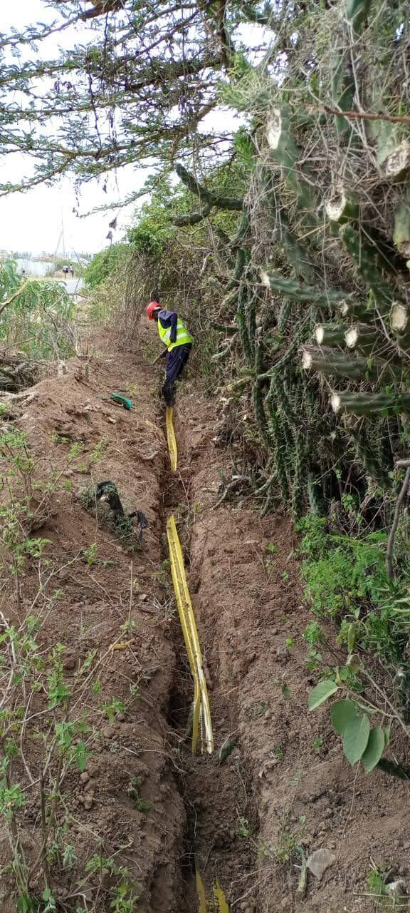
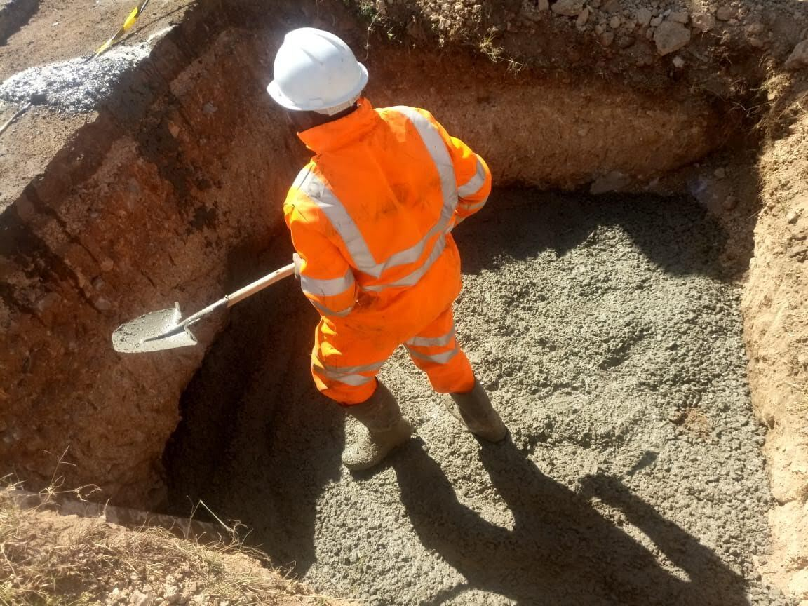
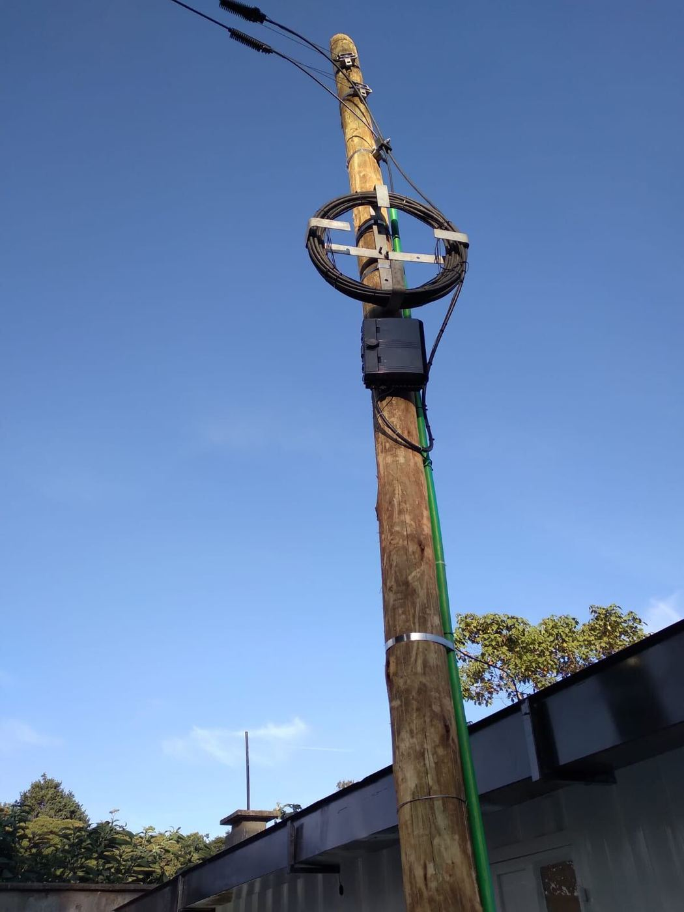
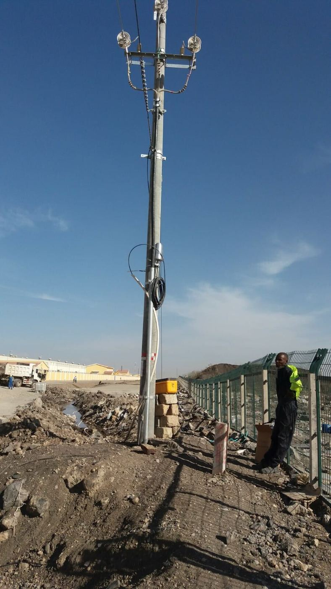
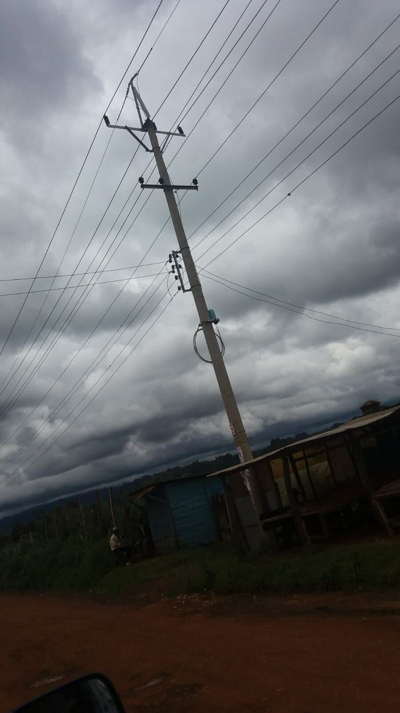
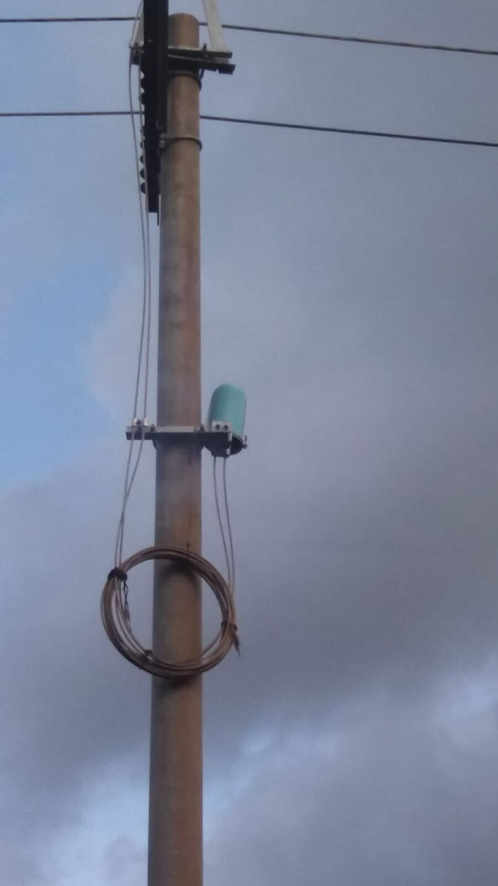
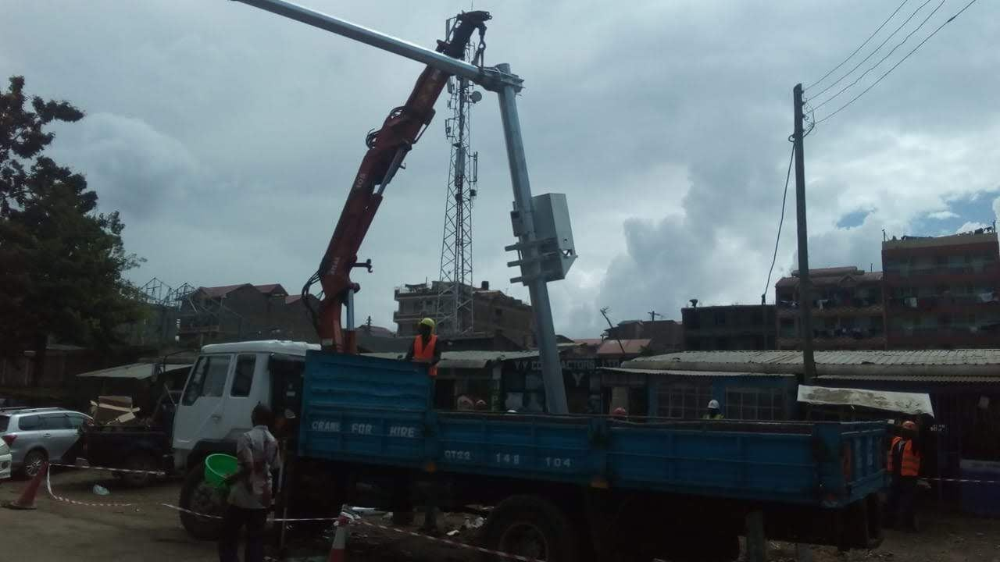
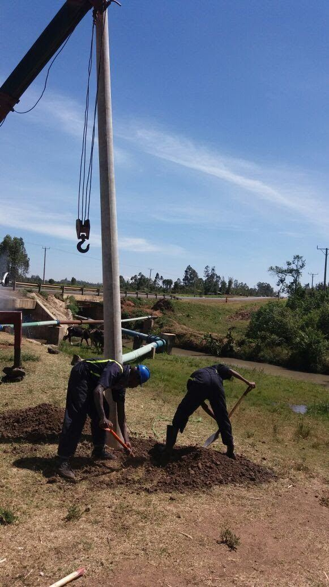
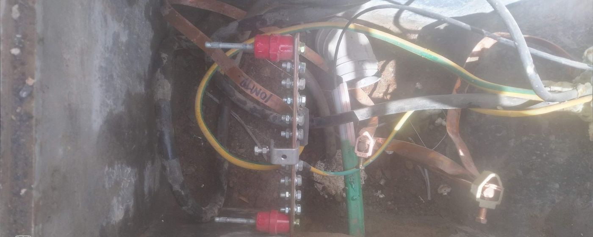

Power Infrastructure Project
Last Mile Connectivity: Power Lines & Transformer Installation
Construction of power lines, including transformer installations, for a Last Mile Connectivity project.
Project record: This case study is based on project information supplied by Smartech Technologies. Where a client outcome, date, location or equipment model has not been provided, the website does not invent it.
Project scope
- Power line construction
- Transformer installation
- Electrical infrastructure
- Last-mile connectivity power works
Why this project matters
Smartech project record for last-mile connectivity power infrastructure, including construction of power lines and transformer installations.
This project adds utility-scale power infrastructure to Smartech’s portfolio alongside solar, electrical and telecom works.
Project photos








